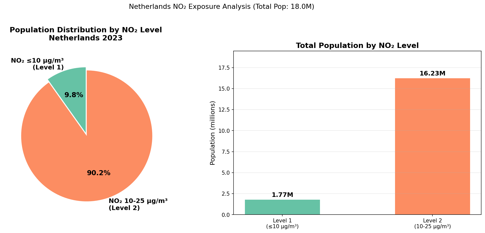

Lab Results
Overview of all GIS lab results: pollutant concentration maps, population exposure, land cover change analysis, and correlation statistics.
Pollutant Concentration & Population Exposure

Population Exposure to NO₂ 90.2% lives in Class 2 (10-25 μg/m³)

NO₂ × Population Bivariate Map 5×5 classification by province

NO₂ Change by LCC Type Min / Mean / Max per transition class (Built Area)
NO₂ by Province
| Province | Pop Class | Pol Class | Bivariate |
|---|---|---|---|
| Loading... | |||
Exposure Summary
| EU Class | Population | % |
|---|
PM2.5 Population Exposure ⏳ Replace images/pm2p5_population_pie_chart.png
PM2.5 × Population Bivariate ⏳ Replace images/pm2p5_bivariate_map.png
PM2.5 Change by LCC Type ⏳ Replace images/pm2p5_lcc_bar_chart.png
PM10 Population Exposure ⏳ Replace images/pm10_population_pie_chart.png
PM10 × Population Bivariate ⏳ Replace images/pm10_bivariate_map.png
PM10 Change by LCC Type ⏳ Replace images/pm10_lcc_bar_chart.png